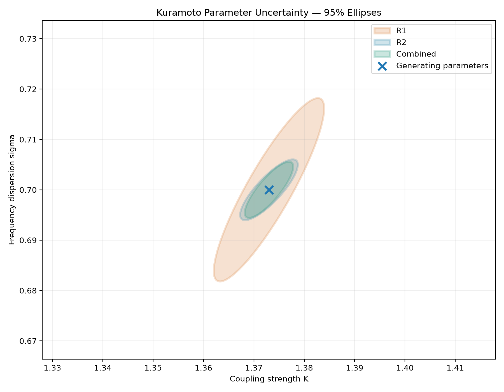
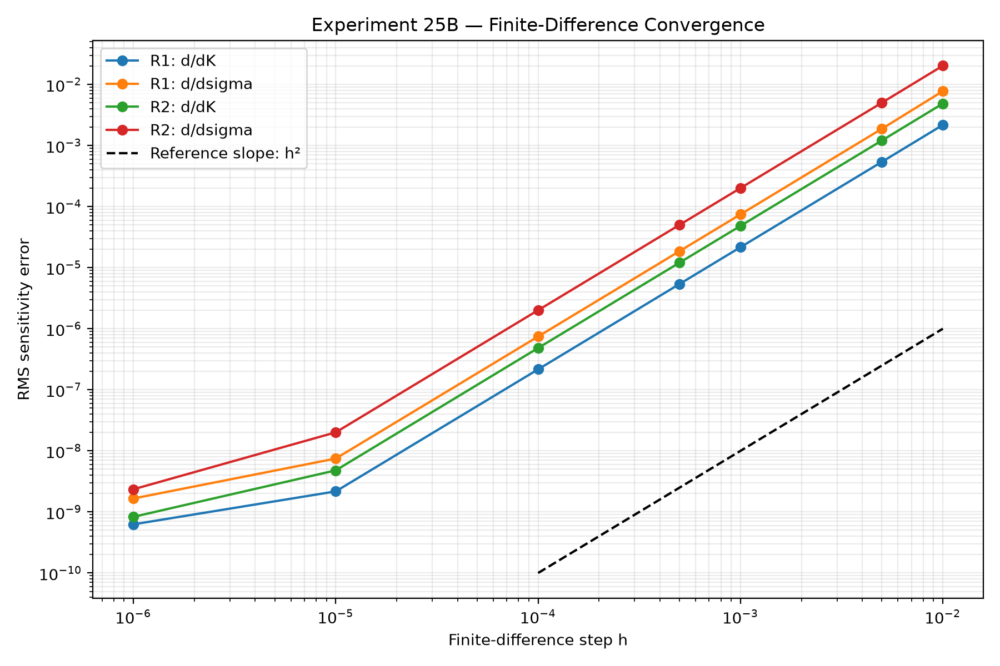
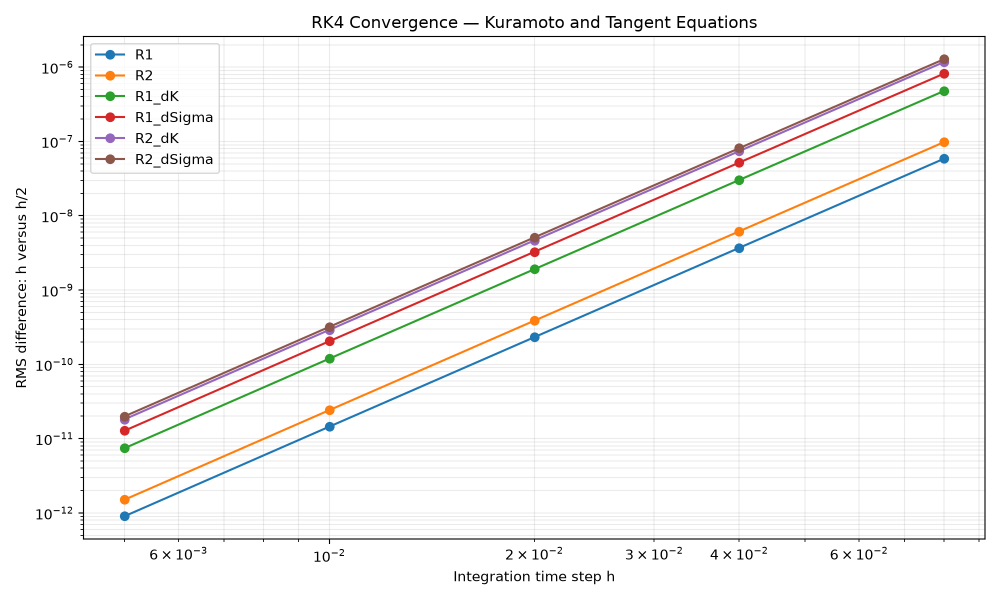
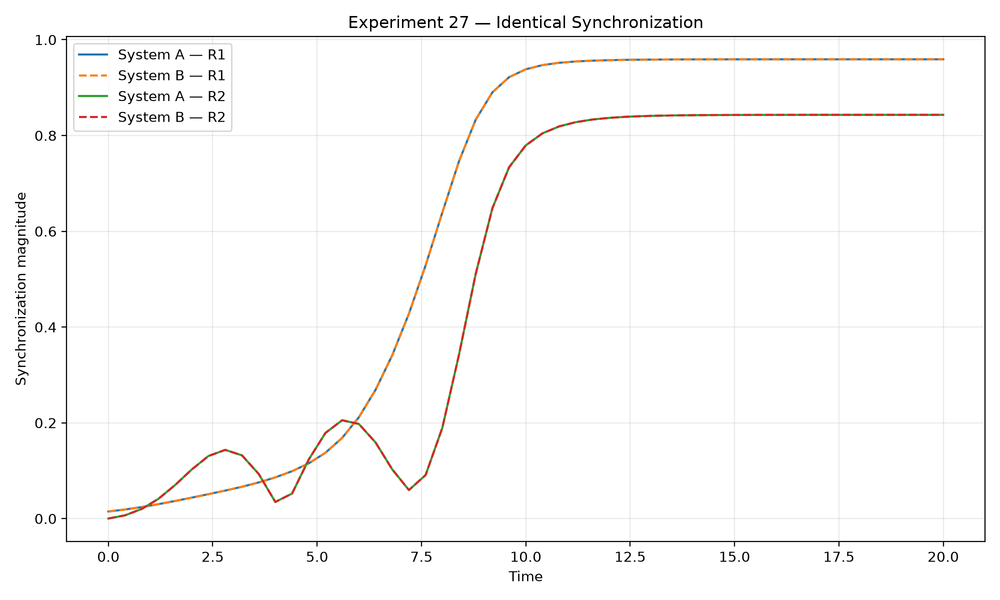
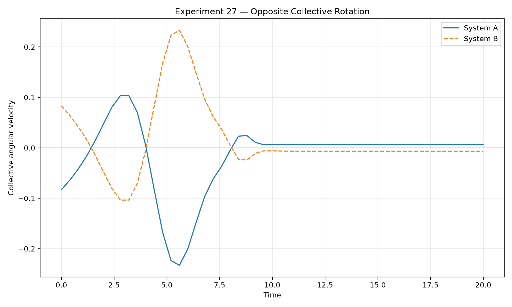
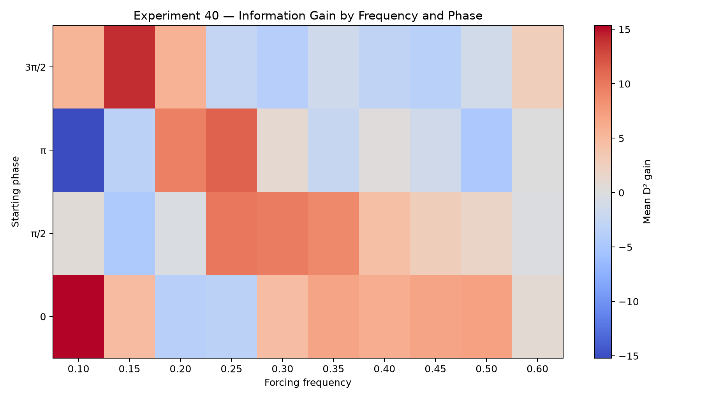
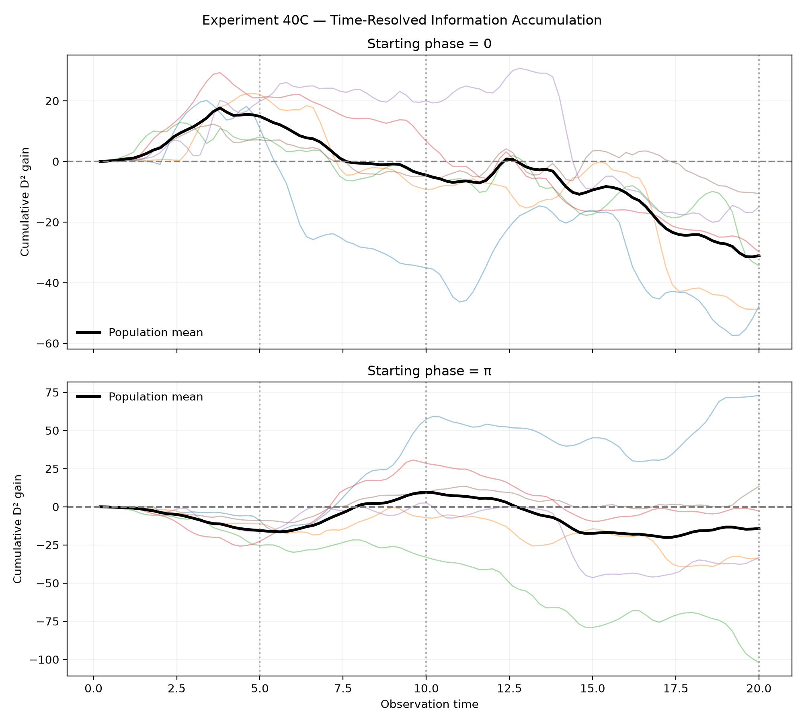

Computational Research / Mathematical Modeling
Synchronization Dynamics & Parameter Inference
Investigating how collective synchronization influences the recovery of dynamical parameters from noisy observations.
01 / Collective Dynamics
Research Question
When do the collective dynamics of coupled oscillators provide useful information about the parameters governing their evolution?
We examine how coupling strength and frequency dispersion influence synchronization in a population of phase oscillators. These collective dynamics provide the foundation for subsequent investigations of parameter sensitivity and identifiability.
Mathematical Framework
The system consists of 72 oscillators governed by the Kuramoto model.
Here, \(K\) denotes coupling strength, \(\omega_i\) is the natural frequency of oscillator \(i\), and \(R\) measures collective phase coherence. The mean phase \(\psi\) determines the direction of the collective coupling term.
The oscillator equations are integrated numerically using the fourth-order Runge–Kutta method. Deterministic initial conditions and natural frequencies allow controlled comparisons between parameter settings.
Synchronization Landscape
A sweep of 315 coupling-strength and frequency-dispersion combinations maps the collective synchronization landscape. The resulting coherence levels vary across the tested parameter space.

This boundary is defined by the finite-time observation protocol and the chosen coherence criterion. It should not be interpreted as a universal critical coupling constant.
02 / Inverse Parameter Inference
Inverse Parameter Estimation
The inverse problem estimates coupling strength from an observed synchronization trajectory. The estimated parameter is the value that minimizes the discrepancy between simulated and observed coherence.
The objective function measures the mean squared difference between observed and predicted synchronization trajectories.

In the initial synthetic experiments, the generating coupling strength was recovered when initial conditions and frequency dispersion were known. This establishes parameter recovery under the tested assumptions, rather than uniqueness across all possible conditions.
Measurement Noise
Repeated parameter-recovery experiments were conducted under four levels of synthetic measurement noise.

The generating parameter remained recoverable under the tested noise conditions, although estimates became more variable as measurement noise increased. Recovery accuracy and estimation precision are therefore distinct aspects of inference reliability.
Observation Timing and Information
Numerical sensitivity was evaluated as the local response of synchronization to changes in coupling.
Across three tested coupling regimes, the sampled time of maximum sensitivity shifted earlier as coupling strength increased.


Observation timing affects parameter sensitivity. The most informative sampled window depends on the coupling regime and need not coincide with maximum coherence. Strong synchronization alone is therefore not evidence of precise parameter estimation.
Joint Parameter Inference
Coupling strength and frequency dispersion were estimated simultaneously from synthetic synchronization trajectories. The analysis investigated parameter compensation, numerical identifiability, and optimization reliability.

At the generating parameters, the sensitivity matrix was numerically full-rank, with a normalized condition number of approximately 4.08. This supports local first-order distinguishability under the tested observation protocol.
The alternative local minimum distinguishes local identifiability from global inference reliability. A full-rank sensitivity matrix supports local first-order distinguishability, but does not rule out competing solutions elsewhere in parameter space. Successful optimizer termination therefore does not guarantee global parameter recovery. These conclusions apply to the tested synthetic model and observation protocol.
Parameter Sensitivity & Uncertainty
How precisely can coupling strength and frequency dispersion be recovered from synchronization measurements? To investigate this question, we compared first-harmonic coherence, second-harmonic coherence, and their combined observations.
Two observables
The first-harmonic order parameter describes collective phase coherence. The second harmonic captures a different aspect of phase organization.
In our numerical experiments, the second harmonic provided stronger local parameter sensitivities around the generating parameters K = 1.373 and sigma = 0.700.
Local parameter sensitivity
We calculated numerical derivatives of both observables with respect to coupling strength and frequency dispersion. These derivatives form sensitivity matrices that describe how small parameter changes affect the observations.
| Observable | Smallest singular value | Condition number |
|---|---|---|
| R1 | 1.1783 | 4.68 |
| R2 | 3.0781 | 3.25 |
| Combined | 3.4773 | 3.27 |
Visualizing parameter uncertainty
Under a local linear approximation, the sensitivity matrix determines the approximate covariance of inferred parameters:

The combined observations produce the smallest local uncertainty ellipse. Compared with R2 alone, the predicted ellipse area decreases by approximately 22% under the assumed noise model.
Local precision versus global ambiguity
The uncertainty ellipses characterize local parameter precision under a linear approximation and the specified Gaussian noise model. Smaller ellipses indicate more precise local estimates, but do not establish global uniqueness. The competing solutions found during optimization demonstrate that initialization and nonlinear parameter compensation remain important.
03 / Numerical Validation & Symmetry
Analytical Sensitivity Equations & Numerical Validation
Rather than estimating parameter sensitivities exclusively through repeated simulations, we derived and integrated sensitivity equations directly from the Kuramoto model.
Governing equations
For zero phase lag, the oscillator dynamics can be written as:
The phase sensitivity to coupling strength is \(a_i=\partial\theta_i/\partial K\). Differentiating the governing equation gives:
Similarly, the sensitivity to frequency dispersion, \(b_i=\partial\theta_i/\partial\sigma\), satisfies:
Together, these equations propagate parameter sensitivities alongside the oscillator phases using fourth-order Runge–Kutta integration.
Numerical validation
At \(N=72\), \(K=1.373\), and \(\sigma=0.700\), the tangent-equation sensitivities agreed with central finite differences to within approximately \(6.6\times10^{-6}\) in the maximum absolute discrepancy across the four tested sensitivity series, using a finite-difference step of \(10^{-4}\).
Finite-difference convergence
Taylor expansion predicts that the central finite-difference derivative has second-order truncation error:
The observed convergence orders were approximately two across step sizes from \(10^{-2}\) to \(10^{-5}\). At \(h=10^{-6}\), the measured orders declined, consistent with increasing influence from floating-point cancellation.

Scope of the validation
The experiment verifies agreement between two numerical approaches to parameter sensitivity. Both approaches use RK4 integration, so a separate time-step refinement study is required to quantify integration error relative to the continuous-time differential equations.
Numerical Integration Accuracy & RK4 Convergence
We investigated the numerical convergence of the fourth-order Runge–Kutta integrator used to evolve the Kuramoto system and its tangent sensitivity equations.
Mathematical prediction
For sufficiently smooth differential equations, RK4 has fourth-order global convergence over a fixed time interval.
\[ E(h)\approx Ch^4 \]Consequently, halving the integration step should reduce the leading error by approximately a factor of sixteen.
Experimental method
We simulated 72 oscillators with coupling strength \(K=1.373\) and frequency dispersion \(\sigma=0.700\). Integration steps ranged from \(0.08\) to \(0.0025\). All trajectories were evaluated at identical observation times.
To avoid assuming a numerical reference was exact, we compared successive refinements using the RMS difference:
\[ D(h)=\left\|R_h-R_{h/2}\right\|_{\mathrm{RMS}} \]We estimated the observed convergence order as:
\[ p=\log_2\left(\frac{D(h)}{D(h/2)}\right) \]Results
All six investigated quantities exhibited convergence orders close to four. Across 24 estimates, the observed orders ranged from approximately 3.979 to 4.007.

Interpretation
The observed convergence behavior supports the expected fourth-order numerical accuracy of RK4 for the tested Kuramoto system and tangent sensitivity equations.
These results demonstrate numerical consistency across the investigated integration steps. They do not constitute a direct comparison against an exact continuous-time solution, nor do they establish fourth-order accuracy under every possible model parameterization.
Rotational Symmetry & Structural Observability
We investigated whether two Kuramoto systems evolving with opposite phase orientations can produce identical synchronization measurements.
Phase-reflection symmetry
For the zero-phase-lag Kuramoto system, consider the transformation:
\[ \theta_i'(t)=-\theta_i(t), \qquad \omega_i'=-\omega_i \]For the Kuramoto–Sakaguchi model with nonzero phase lag, the reflection transformation must also reverse the phase-lag parameter:
\[ (\theta_i,\omega_i,\alpha) \longmapsto (-\theta_i,-\omega_i,-\alpha). \]The phase and frequency transformation alone is sufficient when the phase lag is zero. With nonzero phase lag, reversing alpha is necessary to preserve the reflected dynamics.
With the same coupling strength, the transformed trajectories satisfy the same form of governing equations.
For harmonic order parameters,
\[ Z_m(t)=\frac{1}{N}\sum_{j=1}^{N}e^{im\theta_j(t)}, \]phase reflection implies:
\[ Z_m'(t)=Z_m(t)^*, \qquad R_m'(t)=R_m(t). \]Thus, synchronization magnitudes cannot distinguish the original system from its reflected counterpart.
Experiment 27 — Synchronization measurements
We compared two deterministic systems of 72 oscillators at coupling strength \(K=1.373\) and frequency dispersion \(\sigma=0.700\). The second system used the negatives of the original initial phases and natural frequencies.

Collective angular velocity
The first-harmonic complex order parameter can be expressed as:
\[ Z_1(t)=R_1(t)e^{i\psi(t)}. \]Whenever \(R_1(t)>0\), the collective angular velocity is:
\[ \Omega(t)=\frac{d\psi}{dt} =\frac{\operatorname{Im}(Z_1^*\dot Z_1)}{|Z_1|^2}. \]Unlike synchronization magnitude, angular velocity changes sign under phase reflection:
\[ \Omega'(t)=-\Omega(t). \]
Implications for inverse inference
Measurements consisting only of \(R_1(t)\) and \(R_2(t)\) cannot distinguish phase-reflected systems when both the phases and natural frequencies are transformed. This is a structural observability limitation: information about rotational orientation has been discarded by the magnitude-only measurement process.
Collective phase evolution can distinguish the two reflected systems whenever the collective angular velocity is defined and nonzero. This symmetry does not, by itself, demonstrate non-identifiability of coupling strength and positive frequency dispersion within our original restricted two-parameter inference model.
04 / Statistical Observability
Statistical Distinguishability Under Noise
Experiments 29A–29C examine whether two phase-reflected Kuramoto trajectories remain statistically distinguishable when collective angular velocity is measured with Gaussian noise. Although their synchronization magnitudes are identical, their angular velocities have opposite signs.
Observation model
The original and reflected systems have equal synchronization magnitudes but opposite collective angular velocities:
\[ R_m^A(t)=R_m^B(t), \qquad m=1,2 \] \[ \Omega_A(t)=-\Omega_B(t). \]We assume observations of the form
\[ Y_k=\Omega_H(t_k)+\epsilon_k, \qquad \epsilon_k\sim\mathcal N(0,s^2), \]where H denotes the generating hypothesis and the measurement errors are independent with known, common standard deviation s. Both hypotheses are assigned equal prior probability.
Classification and statistical separation
For two known mean trajectories with common independent Gaussian measurement noise, define:
\[ D^2= \frac{1}{s^2} \sum_{k=1}^{n} [\Omega_A(t_k)-\Omega_B(t_k)]^2. \]Under the specified assumptions, the Bayes-optimal classification accuracy is:
\[ P(\mathrm{correct})= \Phi\left(\frac{D}{2}\right), \]where Φ denotes the standard normal cumulative distribution function. This accuracy characterizes discrimination between two specified trajectories under the assumed observation model. It does not imply reconstruction of individual oscillator phases or identification of arbitrary hidden states.
Experiment 29A — Statistical benchmark
A constant-signal benchmark compared angular velocities +0.20 and −0.20 under Gaussian noise with s = 0.40. For n independent observations, the theoretical accuracy was
\[ P(\mathrm{correct})= \Phi\left(\frac{0.20\sqrt n}{0.40}\right). \]Monte Carlo simulations used 20,000 trials per hypothesis. The simulated classification accuracies generally agreed with the Gaussian prediction as the observation count increased. The estimate at n = 25 fell outside its individual approximate 95% sampling interval, consistent with the possibility of occasional interval exceedances in finite Monte Carlo experiments.
Experiments 29B–29C — Time-dependent discrimination
The analysis was extended to the deterministic Kuramoto–Sakaguchi system with N = 72, K = 1.5, frequency dispersion σ = 0.7, phase lag α = 0.35, and RK4 step size 0.04. Four schedules used eight observations each.
| Observation schedule | Theory, s = 1.0 | Simulation, s = 1.0 |
|---|---|---|
| Early | 87.6521% | 87.7925% |
| Uniform | 88.3191% | 88.1575% |
| Late | 90.0397% | 89.9400% |
| High separation | 91.8918% | 91.6975% |
At lower noise levels, classification accuracy approached 100%, making differences between schedules difficult to resolve. Experiment 29C therefore examined higher synthetic noise levels. The preferred schedule depends on the underlying trajectories and noise assumptions.
Information-Optimal Observation Design
Experiment 30 formalizes measurement scheduling as a constrained optimization problem. Rather than selecting individually strong measurements, it searches for the best admissible combination.
Information objective
For a schedule \(\mathcal T\), the KL divergence between the two Gaussian observation distributions is
\[ J(\mathcal T)= \frac{1}{2s^2} \sum_{t_k\in\mathcal T} [\Omega_A(t_k)-\Omega_B(t_k)]^2. \]When s is fixed, maximizing this divergence is equivalent to maximizing the unscaled squared-separation objective:
\[ S(\mathcal T)= \sum_{t_k\in\mathcal T} [\Omega_A(t_k)-\Omega_B(t_k)]^2. \]We selected exactly eight observation times on a discrete grid from t = 0.4 to 11.6, imposing a minimum separation of 0.4 simulation-time units between consecutive observations.
Dynamic programming
Dynamic programming compares schedules that exclude each candidate time with those that include it while respecting the minimum-spacing constraint. This yields an exact maximum-weight schedule over the specified finite candidate grid, rather than a continuous-time global optimum.
The implementation was independently compared against exhaustive search on a smaller synthetic problem. It also verified the measurement count, time bounds, and minimum spacing.
Optimal observation schedule
\[ \mathcal T^*= \{2.60,\ 3.00,\ 5.76,\ 6.16,\ 6.56,\ 10.80,\ 11.20,\ 11.60\}. \]| Schedule | Unscaled objective S | Accuracy, s = 1.0 |
|---|---|---|
| Early | 5.361726 | 87.6521% |
| Uniform | 5.674782 | 88.3191% |
| Late | 6.592759 | 90.0397% |
| Greedy | 7.815748 | 91.8918% |
| Optimal DP | 7.830217 | 91.9112% |
Independent numerical cross-validation
The original trajectories were generated independently using Python and the website's JavaScript Kuramoto core. Across 301 samples, maximum absolute discrepancies were:
- R₁: 7.77 × 10⁻¹⁶
- R₂: 9.99 × 10⁻¹⁶
- Ω: 8.88 × 10⁻¹⁶
These results confirm close cross-implementation agreement for the tested parameter configuration. They do not establish global numerical accuracy or equivalence for all configurations.
Scope and limitations
The schedule is optimal only over the specified finite grid, for the fixed measurement budget, spacing constraint, and two known trajectories. The calculation assumes independent Gaussian measurement errors with known common variance. Because optimization uses the predicted trajectories, the selected schedule need not remain optimal when model parameters or the governing dynamics are uncertain.
Future work will investigate robust observation schedules when coupling, dispersion, and phase lag are uncertain.
05 / Model Adequacy
Detecting Model Misspecification
Experiment 32 tests whether noisy observations generated by a Kuramoto system with an additional second-harmonic interaction can be distinguished from predictions of a restricted first-harmonic model family.
Alternative dynamical model
\[ \dot{\theta}_i = \omega_i + K_1R_1\sin(\psi_1-\theta_i-\alpha) + K_2R_2\sin(\psi_2-2\theta_i). \]The fitted model fixes K₂ = 0 and searches five possible values of K₁. Synthetic observations are generated at K₁ = 1.5 using K₂ = 0, 0.2, or 0.5.
Statistical method
Twenty-four collective-angular-velocity measurements were sampled over the simulation, with independent Gaussian noise of standard deviation 0.10. The test statistic is the smallest residual sum of squares over the five candidate first-harmonic models.
\[ T(Y)=\min_{K_1\in\mathcal K} \sum_k [Y(t_k)-\Omega_0(t_k;K_1)]^2. \]A conservative rejection threshold was constructed from separate simulated null datasets at each candidate K₁, using the maximum of their empirical 95th percentiles. The reported detection rates are based on independent evaluation simulations.
Results
| True K₂ | Mean residual sum of squares | Detection rate |
|---|---|---|
| 0.00 | 0.231058 | 4.00% |
| 0.20 | 0.241959 | 6.05% |
| 0.50 | 0.357889 | 43.70% |
Interpretation and limitations
These results evaluate a finite family of synthetic dynamical models, not a biological or physical ferrofluid experiment. Rejection provides statistical evidence against the tested restricted model family under the specified observation and noise assumptions. It does not uniquely identify the omitted interaction. Conversely, failure to reject does not establish that the restricted model is correct; the test may have insufficient power to detect a departure from its assumptions.
Calibration covers only five candidate K₁ values and uses Monte Carlo estimates of the rejection threshold. The threshold is conservative across the tested five-point parameter grid, but does not guarantee false-alarm control for every continuously varying coupling strength. Both false-alarm and detection rates are estimated from finite Monte Carlo samples and therefore have sampling uncertainty.
The experiment and numerical results are available in the reproducible Python script and results CSV.
06 / Driven Dynamics & Active Observability
Research Question and Mathematical Framework
Research question
How can controlled interventions reveal differences between dynamical states that are difficult to distinguish through passive observations alone?
Driven Kuramoto–Sakaguchi model
The experiments use 72 oscillators. The driven simulations include a phase lag of \(\alpha=0.35\), and examine how time-dependent coupling changes collective behavior.
Here \(f\) is forcing frequency, \(\phi\) is starting phase, and \(A\) is forcing amplitude. Experiments 39–40C use \(K_0=2.5\), \(A=1\), and frequency dispersion \(\sigma=2.5\).
Driven Synchronization and Averaging
Experiments 33–34B
Periodic switching alternates the system between coupling-dominated and dispersion-dominated dynamics. The rapidly switched trajectories were compared with trajectories evolving under averaged parameters.
In Experiment 34B, the RMS difference in first-harmonic synchronization decreased from approximately 0.0736 to 0.0080 across the tested switching periods at the finest reported integration step.
This supports finite-time averaging behavior for the studied configurations. It does not establish a general averaging theorem or demonstrate resonance.
Dynamical Memory and Active Observability
Hidden-state information
Distinct preparation histories can produce similar collective synchronization measurements while preserving different underlying oscillator phase configurations.
Experiments 35–36 investigated whether a controlled coupling pulse could expose these hidden differences. Experiments 37–38 examined intervention strength, duration, cost, and population variability.
Statistical distinguishability
The measurement noise is modeled as independent Gaussian noise with standard deviation \(s\). Larger \(D^2\) means stronger separation between the two specified expected observation trajectories.
The initial active-observability example involved a selected pair of histories. Subsequent population experiments showed substantial variation in the benefit of different interventions.
Frequency and Phase Dependence
Experiments 39–40
We investigated the information gained by sinusoidally modulating coupling strength.
Positive values indicate improved distinguishability relative to passive measurement. Negative values indicate reduced distinguishability.

The observed frequency dependence is not sufficient to demonstrate physical resonance.
Numerical Robustness and Observation Time
Experiment 40B — Step-size validation
Targeted forcing conditions were evaluated with RK4 time steps \(0.02\), \(0.01\), and \(0.005\). The largest observed spread in mean information gain was approximately \(5.09\times10^{-6}\).
Observation-window dependence
| Forcing condition | T = 2.4 | T = 4.8 | T = 9.6 |
|---|---|---|---|
| \(f=0.10,\ \phi=0\) | +8.06 | +15.36 | −3.24 |
| \(f=0.10,\ \phi=\pi\) | −4.84 | −15.20 | +8.47 |
| \(f=0.25,\ \phi=\pi/2\) | +1.09 | +10.08 | +11.55 |
Values are mean changes in squared statistical separation at the finest tested integration step.
Experiment 40C — Cumulative information
Here \(\Delta R_F\) and \(\Delta R_P\) denote the differences between the two preparation histories under forced and passive dynamics, respectively.

Interpretation, Validation, and Limitations
What the experiments support
The numerical experiments demonstrate that controlled forcing can alter the distinguishability of two specified oscillator histories. The effect depends on intervention frequency, starting phase, measurement duration, and the population under investigation.
Validation
Experiment 40B shows strong numerical stability under the tested integration-step refinements. This does not independently verify every implementation detail or establish the formal convergence order for these runs.
Limitations
The frequency–phase analyses used six independently initialized populations and three probing times per population. Probing times from a common population are not independent population realizations.
The statistical analysis assumes known competing trajectories and independent Gaussian observation noise. Resonance, unknown-parameter inference, and generalization to arbitrary populations remain open.
Conclusion
Numerical Methods
Model and initialization
Simulations used a finite population of 72 globally coupled Kuramoto oscillators, with zero phase lag. Initial phases and intrinsic frequencies were generated deterministically to permit reproducible comparisons between parameter combinations.
\[ \frac{d\theta_i}{dt} = \omega_i+KR\sin(\psi-\theta_i) \]The intrinsic frequencies were scaled by the dispersion parameter σ. The synchronization order parameter was calculated from the oscillator phases.
\[ R(t)= \left| \frac{1}{N} \sum_{j=1}^{N}e^{i\theta_j(t)} \right| \]Numerical integration
Oscillator trajectories were integrated using the classical fourth-order Runge–Kutta method (RK4). The joint-inference experiments used a time step of 0.04. Earlier experiments compared numerical integration methods and evaluated convergence under time-step refinement.
Inverse parameter estimation
Synthetic observations were generated from known coupling and dispersion parameters. Candidate parameter combinations were evaluated by comparing their predicted synchronization trajectories against the observations.
\[ J(K,\sigma)= \frac{1}{M} \sum_{j=1}^{M} \left[ R_{\mathrm{obs}}(t_j) - R(t_j;K,\sigma) \right]^2 \]Continuous least-squares optimization was performed from multiple initial guesses. The resulting solutions were evaluated using numerical gradient and Hessian calculations.
Identifiability and sensitivity
A finite-difference sensitivity matrix was constructed from the derivatives of predicted synchronization measurements with respect to coupling and dispersion. Its singular values were used to assess local first-order parameter distinguishability.
Positive Hessian eigenvalues and small numerical gradients supported the classification of two distinct local minima. This does not establish global uniqueness or complete identifiability.
Observation timing
Predicted synchronization trajectories from the generating and alternative parameter combinations were compared at discrete observation times. Their absolute differences were used to identify candidate times for discriminating between the two models.
\[ \Delta R(t)= |R^{(A)}(t)-R^{(B)}(t)| \]Under independent Gaussian measurement noise with standard deviation s, the expected log-likelihood ratio favoring the generating model over the alternative at one observation time is:
\[ D_{\mathrm{KL}}(t)= \frac{[R^{(A)}(t)-R^{(B)}(t)]^2}{2s^2} \]Scope and limitations
Results concern a deterministic, finite-population Kuramoto model with synthetic observations. Identifiability conclusions depend on the specified model, initialization, observation schedule, and numerical procedures. Biological interpretations require independently justified mechanistic models and experimental validation.